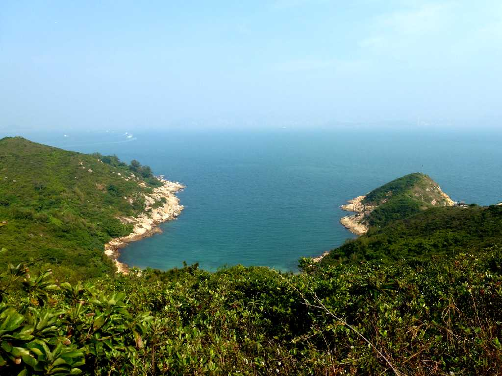
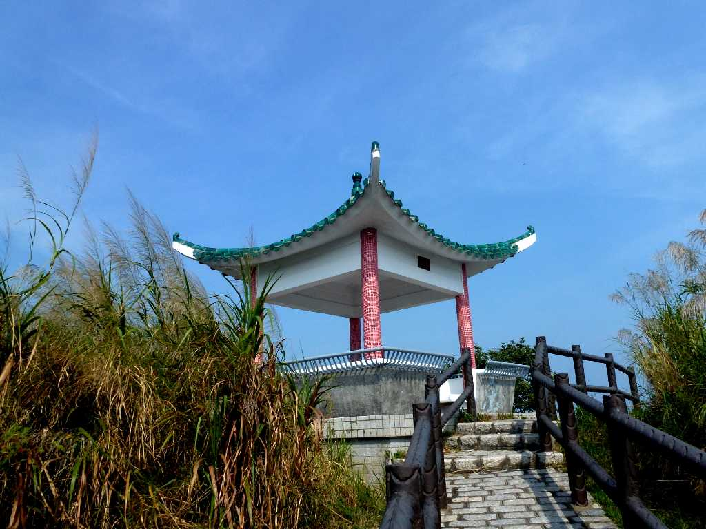
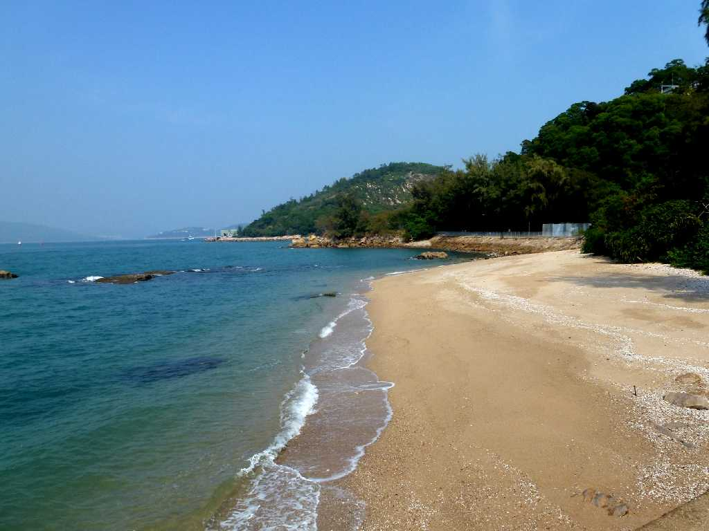
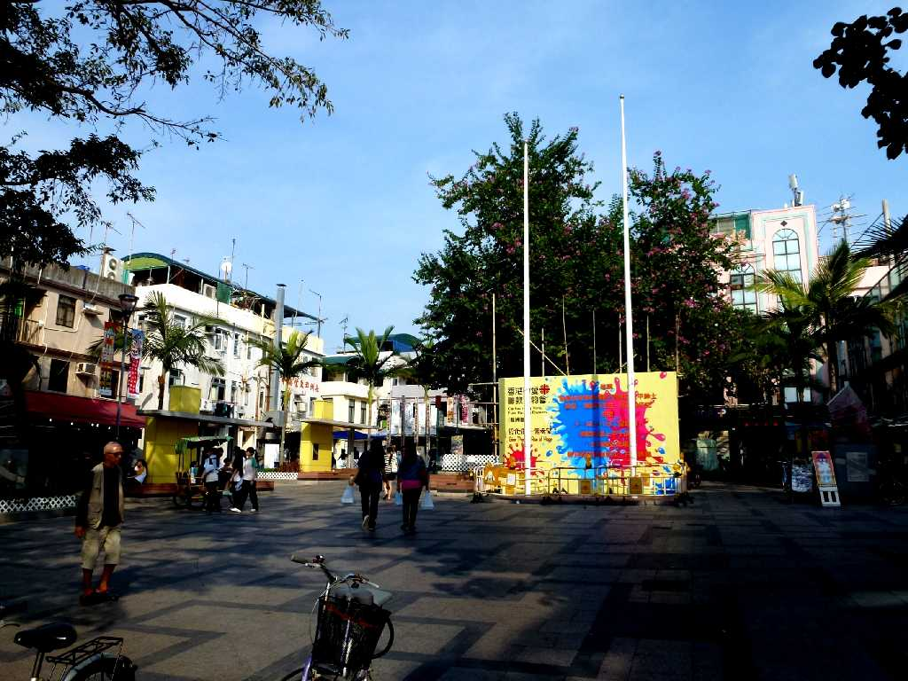
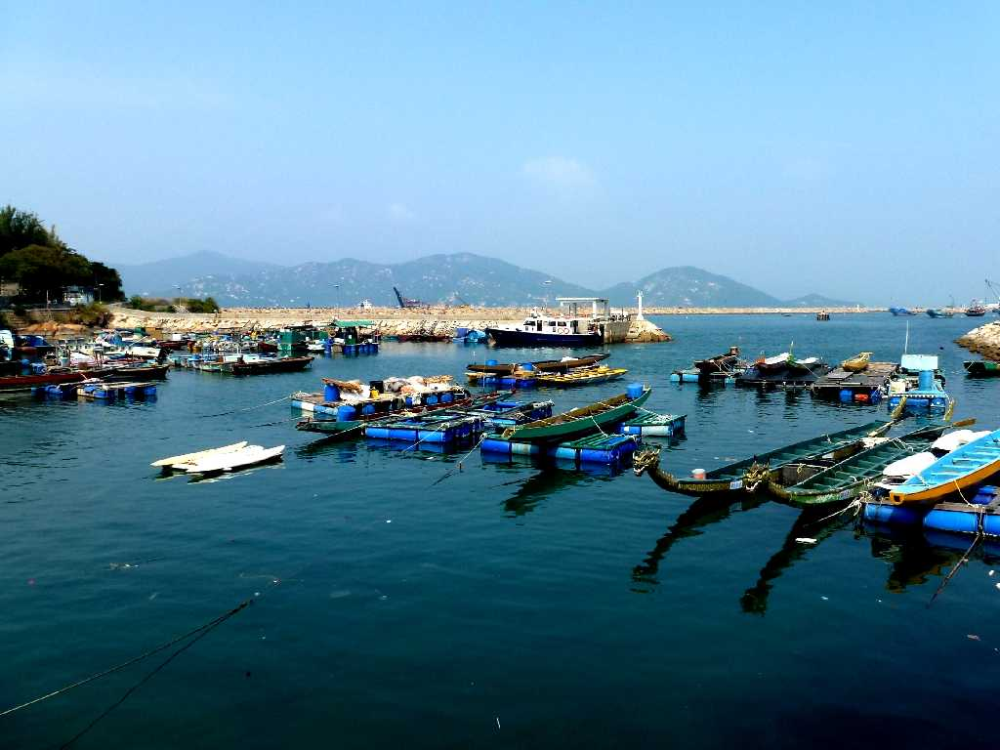

Tung Wan Tsai Cheung Chau Island Hong Kong 香港 長洲島 東灣仔
北部散策路見晴台から東灣仔を望む

Pavilion Cheung Chau Island
November 14 2012 Cheung Chau Island

Beach Tai Kwan Wan Cheung Chau Island

Central Cheung Chau Island

Sai Wan Cheung Chau Island 西灣